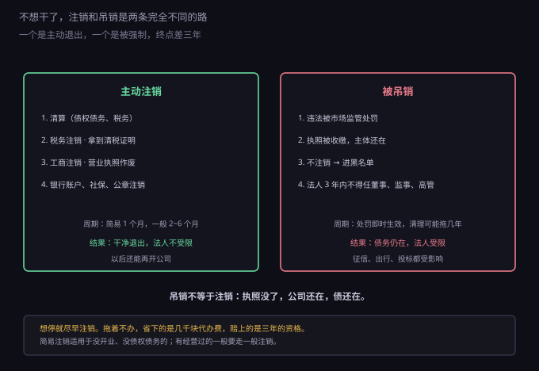
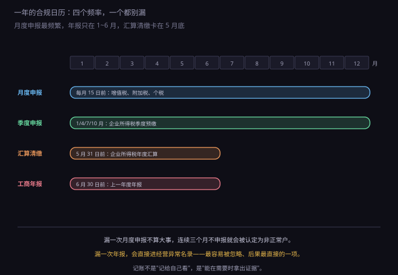

约 0.32 万字 · 3 张图 · 一年里那几件"忘了就出事"的事
很多人对记账的理解是"记个流水"：收入多少、支出多少、还剩多少。 这叫流水账，有用，但它不是会计意义上的记账。
区别在什么地方？流水账回答"钱进出了多少"， 会计记账回答"这些钱现在以什么形态存在，以及这段时间赚没赚"。 后者才能出两张表：资产负债表（家底）和利润表（成绩）。
举个具体的例子。花三万买了一台电脑，流水账记"支出 30000"， 当月看起来亏了三万；会计记账会把它记成固定资产， 按月折旧，比如分三十六个月，每月只算八百多的成本。 同一件事，两种记法，利润表上的数字差三十倍——而后者才是税务和报表认的。
所以"记账"的最小要求其实是三条：
三条都做到，最省事的做法是找代账公司。市场价大概每月两百到五百， 一年三千到六千，包含记账、出表、报税。对一个人的公司， 这笔钱基本无法通过"自己学"省下来——不是学不会，是时间成本更高。
如果业务极简（比如只有几笔订阅收入）， 用记账软件自己记也完全可行，一年几百块。 但要注意：软件只负责记账，报税那一步还是要自己报或者找人报。
还有一个高频问题值得单独说：老板用个人卡收公司的钱。 小公司初期很常见——客户转账到微信、到个人银行卡，觉得方便。 后果有三层：一是这笔钱在公司账上没有记录， 报税时对不上；二是公司支出和私人消费混在一起， 将来算利润、算分红、算个税都说不清； 三是最严重的——有限责任可能被击穿。 公司的核心优势是"股东以出资为限担责"， 如果财产混同到分不清哪些是公司的，债权人可以主张股东承担连带责任。 注册公司省下来的那点麻烦，会在这一步全部还回去。
记账的月度流程其实就五步：收齐票据和银行回单 → 核对银行流水 → 录入凭证 → 结转出表 → 按表申报。前两步是拿资料， 第三第四步是代账公司做的事，第五步是报税。 你唯一必须参与的，是第一步——把票给出去。 很多人连这一步都拖，导致账越积越乱，最后补账的钱比代账费还贵。
凭证保存这件事顺便说一下。《会计档案管理办法》规定： 会计凭证和账簿保存三十年，财务会计报告保存十年。 不是"存到报完税"，是存三十年。所以电子凭证要定期备份， 纸质凭证要装箱编号——将来查账、注销、股权变更都要用。
这两件事经常被混成一句"记账报税"，但它们的方向相反： 记账是往里记，把业务变成账；报税是往外报，把账变成申报表。
一个常见的误解是"没收入就不用管"。8.3.4 讲过， 没有收入也要做零申报——申报表要填，数字填零， 但动作必须有。
漏报的后果是分级的。漏一次，补报加可能的小额罚款； 连续三个月不申报，税务系统会把企业认定为"非正常户"。 到了这一步，发票停供、无法领购、无法正常注销， 而且法人的身份信息会被关联，影响他在其他企业办税务事项。
解除非正常户要走的流程是：补申报、补缴税款和滞纳金、接受处罚、 然后申请解除。麻烦程度远高于按时申报——这也是为什么代账公司的核心价值 其实不是"记账"，是"替记得住"。
工商年报（官方叫"年度报告公示"）是每年一月一日到六月三十日， 在"国家企业信用信息公示系统"填报上一年度的信息。
要填的内容不多，但有几项很多人会填错：
注意"公示"这两个字：填进去的内容是公开的， 任何人都能查。所以资产状况这一栏别随手填， 填错了既误导别人，也给自己留下不一致的记录。
不报的后果是确定的：列入经营异常名录。 依据是《企业信息公示暂行条例》和《市场主体登记管理条例》， 后者还允许处一万元以下罚款。
填错了还有救：六月三十日之前可以自行修改， 过了这个时间就只能等下一年度更正。所以报完别急着关页面， 把资产总额、社保人数、股东出资这三项和账上、社保记录对一遍再提交。 这三项是对比时最容易被挑出来的。
这一条最要命的地方是它没有提醒。 不会有人打电话告诉你"你该报年报了"，系统也不会因为你要报年报而发短信。 很多公司就是这么"莫名其妙"进了异常名录。
进经营异常名录的原因只有四种，前三种是自己疏忽，第四种最常见也最冤。
一、没报年报。最常见。补报之后申请移出， 一般五个工作日内办结。
二、没公示信息。除了年报，还有一些信息是"责令期限内公示"的， 比如股东出资、行政许可、行政处罚。被责令了还不公示，同样进异常。
三、公示信息造假。隐瞒真实情况、弄虚作假。 这一种移出最麻烦，因为要更正、要说明、可能还要罚款。
四、住所失联。登记地址查无此人、电话打不通、信件退回。 这一种最冤：公司正常经营，只是搬了办公室没去改登记地址， 或者登记时用的是孵化器地址，后来孵化器不代收信件了。 市场监管部门"双随机"抽查寄一封信，退回来就认定失联。
所以搬办公室这件事，除了改快递地址，还要去改工商登记地址。 这一条听起来琐碎，但它是很多人第一次接触"经营异常"的原因。
异常名录本身不是终点。移出就行，代价是一段时间内 （通常在信用系统里留痕）在招投标、政府采购、评优、融资时被问到。 真正严重的是满三年还没移出： 会被列入"严重违法失信名单"，法定代表人个人的出行、贷款、任职都会受影响。
这两个词经常被混着说，法律后果完全不同。

注销是主动退出：清算债权债务、税务注销拿清税证明、 工商注销、银行账户和社保公章一并处理。周期看情况， 简易注销一个月左右，一般注销两到六个月。 走完之后主体消灭，法定代表人不受限制，以后还能再开公司。
吊销是行政处罚：因为违法（比如长期不年报、虚假登记、 超范围经营情节严重）被市场监管部门强制吊销执照。 关键在于——执照被收走了，公司还在。 债务还在，诉讼主体还在，只是不能经营了。
更麻烦的是对人。根据《公司法》，被吊销营业执照、 责令关闭的公司企业的法定代表人，并负有个人责任的， 自吊销之日起三年内不得担任公司的董事、监事、高级管理人员。 实践中还会叠加征信、出行、投标方面的限制。
所以"不想干了"这件事，正确的动作是尽早注销， 不是放着不管等它自己消失。拖着不办，省下的是几千块代办费， 赔上的是三年的资格。
注销也分两种。没开业、没债权债务的，可以走简易注销， 公示二十天左右即可；经营过、有债权债务的，要走一般注销， 需要清算组备案、登报或公示、税务清税。判断标准很简单： 有没有欠别人的钱、有没有别人欠你的钱。
把上面这些排进一年，其实只有四个频率。

月度：每月十五日前，增值税、附加税、个人所得税。 遇节假日顺延，但别指望"顺延"能救你，提前几天报最稳。
季度：一月、四月、七月、十月，企业所得税季度预缴。 小规模纳税人的增值税也是按季申报，具体看核定。
年度两件：五月三十一日前企业所得税汇算清缴； 六月三十日前工商年报。这两件事一年只有一次，错过就是错过。
还有一件不在图上但要知道：如果是个体工商户， 经营所得汇算清缴的截止日是三月三十一日， 比企业的五月三十一日更早。个体户很容易按企业的节奏记，然后错过。
讲完规则，说操作。一个人管这些事，不需要系统，需要三样东西。
第一，一个代账公司。每月两三百，把记账和月度申报接走。 选的时候问三个问题：有没有代理记账许可证、每月什么时候报、 出了问题谁负责。别只看价格，一百块一个月的代账， 往往意味着你的账是实习生在做。
第二，一个日历提醒。每年设四个： 一月一日（年报开始，可以报了）、五月二十日（汇算清缴要收尾）、 六月二十日（年报快截止）、每月十号（申报提醒）。 提醒设在手机上，不要只放在脑子里。
第三，一个凭证文件夹。发票、回单、合同、工资表， 按月建子文件夹，电子件存云盘、纸质件装箱。 代账公司每月会要，你自己注销时也要用。
这三样加起来一年成本大约三五千块，换来的是"不会因为忘了某件事 而突然发现公司进了异常名录"。对一个人的公司，这笔钱买到的是注意力—— 你的注意力应该花在产品上，不是花在记申报截止日上。